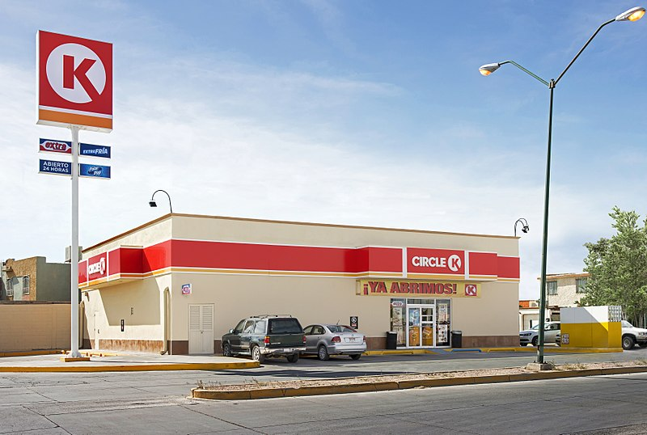

Incorporated in 1951 in El Paso, Texas, Circle K Stores, Inc. has its headquarters in Tempe, Arizona, and is owned by the multinational corporation Couche-Tard. The company filed for bankruptcy in 1990 and changed hands several times before being purchased by Alimentation Couche-Tard in 2003. As of February 2020, Circle K had 9,799 locations across North America, 2,697 locations across Europe, and an additional 2,380 locations overseas .In 2015, Circle K unveiled a new logo and brand identity, and Couche-Tard declared that it would roll out the brand globally, including in English-speaking Canada (rebranding from the Mac's brand), Europe (rebranding from the Statoil brand), and the United States (rebranding from the Kangaroo Express brand and updating the logo)

Content